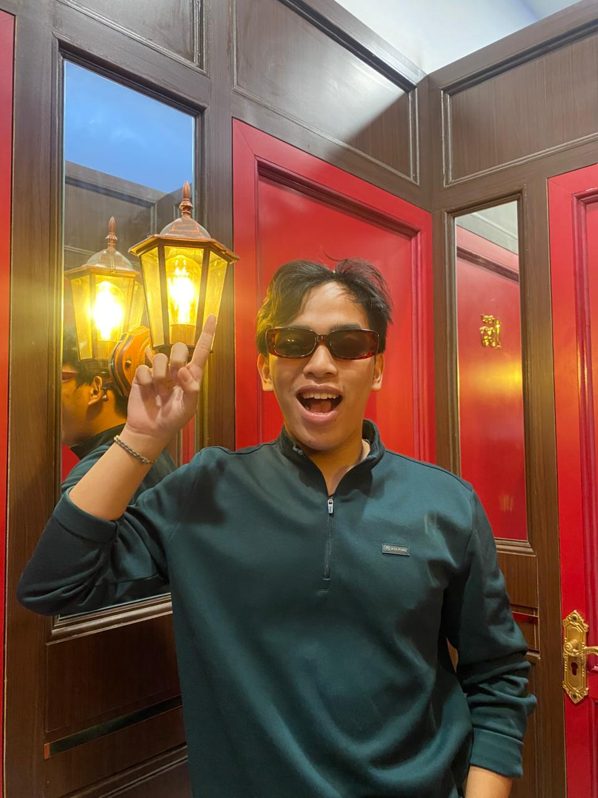
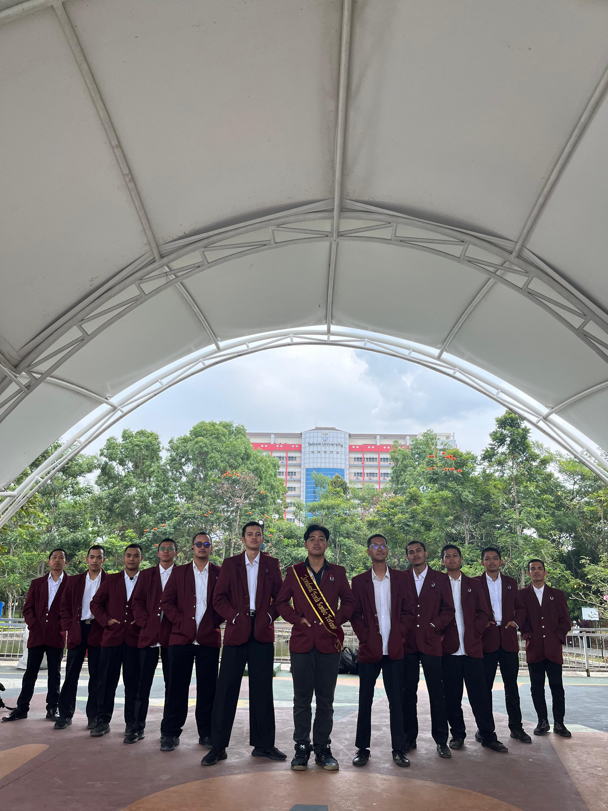

Cleaning-Ku!
Aplikasi manajemen kebersihan asrama dengan alur navigasi yang ramah pengguna. Dikerjakan sebagai tugas IMK Semester 4 dengan fokus pada riset pengguna dan desain interaksi.
Mahasiswa Teknologi Informasi · Telkom University
Menyatukan estetika visual dan fungsi bermakna
-
UI/UX Designer · Front-End Developer · Sinematografer

Saya adalah mahasiswa Teknologi Informasi di Telkom University yang passionate dalam menggabungkan seni visual dengan teknologi. Bagi saya, setiap piksel punya makna dan setiap baris kode adalah ekspresi kreativitas.
Dengan IPK 3.50, saya aktif di berbagai proyek akademik dan kompetisi, serta memimpin divisi media informasi di organisasi kampus.
Sekolah Menengah Atas – IPA

S1 Teknologi Informasi · IPK 3.50
Aktif
Merancang pengalaman pengguna yang intuitif, estetis, dan berorientasi pada kebutuhan pengguna nyata.
Prototyping, sistem desain, komponen reusable, dan kolaborasi tim desain dalam satu platform.
HTML, CSS, JavaScript, Vue.js – Membangun antarmuka web yang responsif dan interaktif.
Mengabadikan momen dengan komposisi dan pencahayaan yang artistik dan bercerita.
Produksi video sinematik dari konsep, pengambilan gambar, hingga pengeditan pasca produksi.
Desain konten visual media sosial, poster, dan identitas brand yang menarik dan konsisten.
Strategi konten digital yang menggabungkan visual storytelling dengan pesan yang tepat sasaran.
Produksi massal konten visual dengan template kustom, brand kit, dan kolaborasi tim.
Aplikasi manajemen kebersihan asrama dengan alur navigasi yang ramah pengguna. Dikerjakan sebagai tugas IMK Semester 4 dengan fokus pada riset pengguna dan desain interaksi.
Platform sosial akademik berformat Twitter/X yang dirancang khusus untuk mahasiswa. Mengintegrasikan antarmuka responsif, manajemen postingan, dan sistem feed dinamis.
Aplikasi manajemen keuangan pribadi dengan fitur manage category, tracking pengeluaran, dan visualisasi data keuangan yang intuitif untuk mahasiswa.
Website kesehatan mental hasil kolaborasi lintas divisi di kompetisi hackathon The Hack CCI. Peran: UI/UX Designer yang berkoordinasi dengan tim Web Dev dan Data Research.
Laboratorium Multimedia · Sinematografi
Laboratorium Multimedia · Videografi
Konten Sosial Media · Himpunan Mahasiswa IT
Desain Konten · Komunitas Cianjuran
Desain Poster & Social Media
Punya proyek menarik, tawaran kolaborasi, atau sekadar ingin ngobrol? Jangan ragu untuk menghubungi saya!